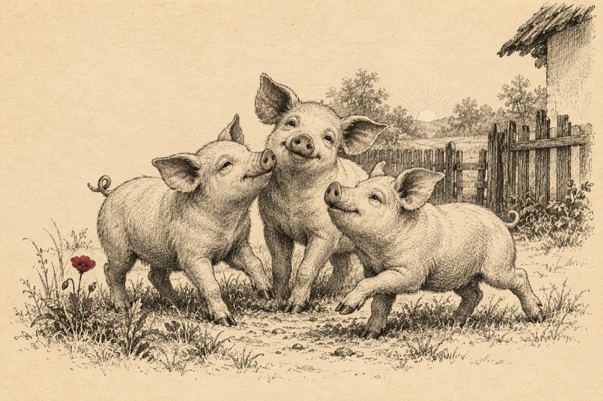

Trei purceluși
Povestea noastră-i vesel-tristă
Eu și colegele de față plecat-am de acasă
Fost-am invitați să mergem la o nuntă
Cu locuri garantate la fiecare masa
Bucatarii au spus că pentru frăgezire
E bine să servim ceva tărie
Noi am băut pân' ne-am ieșit din fire
C-așa-i la nuntă, te ții să faci beție!
Și iată că veni și ora H
La o poruncă se-auzi; Aduceți trufandaua!
Când bucătarul șef, un cuțitaș
Se pregătea să facă la meseni safteaua
Tristețe mare în bucătărie pentru toți
Pe targă ne-au adus cu disperare doi băieți
Și-au declarat ca purcelușii sunt toți morti
Ce s-a-ntâmplat, vă vine ca să credeți?
Ne-au dus la lada de gunoi, ne-ai aruncat!
În zori, noi trei ne-am dezmeticit
Am evadat din lada de gunoi
Spre casă așa mahmuri am și pornit
Și-acum ne jucăm în curte tot vioi!
Vasile Groza
Apare și în: Poezii cu animale.